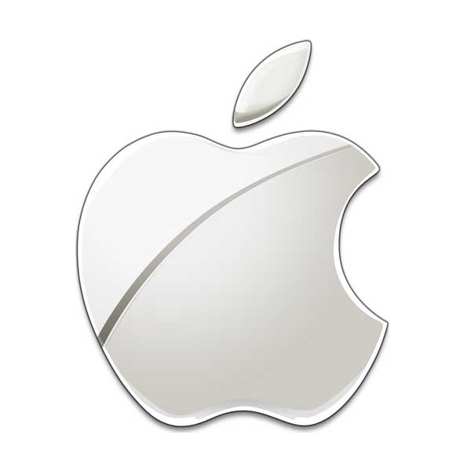
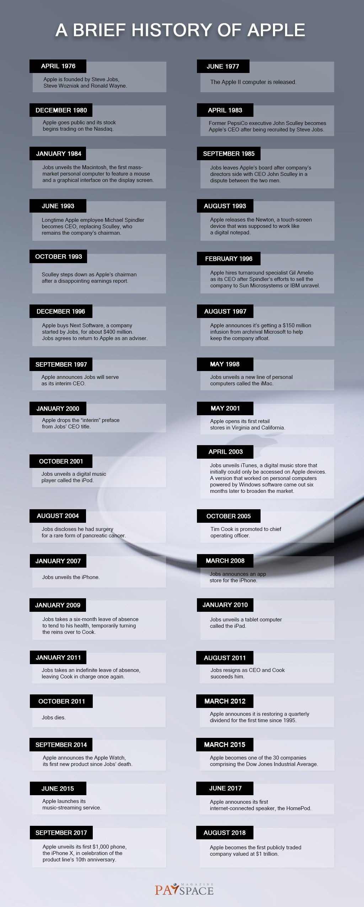
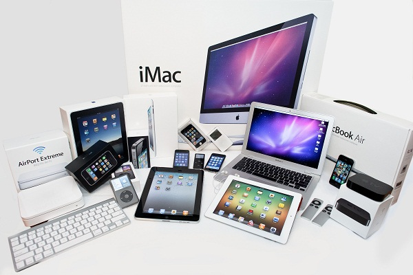

APPLE:
- Apple Inc. is an American multinational technology company headquartered in Cupertino, California,
that designs, develops, and sells consumer electronics, computer software, and online services. - Apple's core product lines are the iPhone smartphone, iPad tablet computer, and Macintosh computer line.
- The company's first product was the Apple I, a computer single-handedly designed and hand-built by Wozniak, and first shown to the public at the Homebrew Computer Club.
- Apple Computer Company was founded on April 1, 1976, by Steve Jobs, Steve Wozniak, and Ronald Wayne.
Steve Jobs
Ronald Wayne

Steve Wozniak
Timeline:

Apple Products:
3 Best Apple Products That Revolutionized the World:
- Macintosh
- IPod
- IPhone
1.Macintosh: The First-Ever Graphical Operating System:
Macintosh was the first graphical operating system that was developed by Apple Incorporation. Before the birth of Macintosh, the Operating system was used by commands that are very hard to use and need a good command over it. Unix was the first-ever operating system but didn’t have a graphical interface.
2.iPod
iPod was invented under the guidance of Steve Jobs. In 2001, when the first iPod was made, it gave an easy to use visual interface that made the user experience better. Songs now can easily download from the apple store that solves the problem of physical storage. Portability, Easy to Use, Waterproof, Downloading the favorite songs are some of the best features IPod gives to people. This made it one of the best apple products that revolutionized the world.
3.IPHONE
The birth of the iPhone in 2007, ended the era of simple mobile phones and begin the world of mobile computing. With this revolutionary technology, you can make calls, play your favorite songs and even send emails too. iPhone was one of the most selling Apple products that help to grow the company and brings changes to technology. People appreciate the efforts of Apple engineers and purchase iPhones into a huge quantity. In the first quarter of 2010, the company Apple incorporation has sold nearly 8.7 million iPhones. This was a totally dominating performance that has done any other company. The same revolution happened in the first quarter of 2018 in a more massive way. In that period Apple has sold more than 47 million iPhone to its customers, which is nearly 6 times more than in 2010.
“The reason why people loved the iPhone more, it is more secure, a totally new operating system and broke the monopoly of Android OS”.